A Comparison of Two Cheap 8-port SATA Controllers
Linux Software RAID Performance Comparisons
The Problem
There are very few SATA controllers available with multiple ports,
and those that are avaiable usually are fairly expensive because
they offer hardware RAID. However, running software RAID on a
dedicated Linux fileserver has advantages in maintainability and
disaster recovery.
These tests are designed to evaluate SATA controllers for use with
software RAID. Any hardware RAID support provided by the card is
ignored.
The Controllers
- Supermicro AOC-SAT2-MV8
- 8 SATA II ports
- 64-bit PCI-X133MHz (tested in 32-bit PCI slot)
- Chipset: MV88SX6081
- Linux driver: sata_mv
- Cost: $99.99 from newegg.com
- Configuration: JBOD
- Promise SuperTrak STTX8650
- 2 SFF-8087 ports (8 SATA II ports)
- PCI Express x8
- Chipset: Sequoia
- Linux driver: stex (from Promise website)
- Cost: $208.05 from provantage.com (+28.36 for two
SFF-8087OCF hydra cables -- the card comes with hydra cables
with the data+power drive connectors, but the hot-swap
enclosure used for testing requires data-only cables and
supplies power internally.)
- Configuration: "Bypass
mode" (JBOD)
The Test System
- Motherboard: Asus K8N-DRE
- Processors: Two 1.8GHz Opteron 244
- RAM: 8GB DDR400 running at 333MHz
- Slots: 1 32-bit PCI; 1 PCI Express x16
- Drives: Seagate Barracuda 7200.11 1000Gbytes ST31000333AS
- Drive cage: Supermicro CSE-M35T-1B 5-Bay Enclosure (fits in
three 5-inch chassis bays; sells for about $100-$120 from
newegg.com)
- Ubuntu (Intrepid Ibix), Linux 2.6.27-11-server
The Test Matrix
- Read Percentage: 100% (pure read), 50% (mixed), 0% (pure write)
- Random Percentage: 0% (sequential), 100% (random)
- Thread counts: 1 and 20
- Block sizes: 4k, 8k, 32k, 64k, 256k, 1m, 4m, 8m, 64m
- Targets: All 5 driver were tested simultaneously, as well as
each drive individually.
- All I/Os are issued using the O_DIRECT flag to the middle
200GB of the drive (from 400g-600g).
- All tests last 20 seconds.
Conclusion
For pure read workloads, the Promise card has more consistent
performance and better scaling, especially with multiple outstanding
I/O requests from multiple threads.
For mixed-write or pure-write, the Supermicro card does better,
possibly because of a write-cache, but the Marvell 88SX6081 does
not seem to have one. Perhaps the Promise card turns off the drive's
write cahce?
This may be of concern on high-availability system -- writes pending
in cache during a power failure may never make it to disk.
For use on mostly-single-threaded read workloads, with
occassional single-threaded writes, the Supermicro has superior
price-performance characteristics.
Sequential Single Threaded Tests
Driver performance clearly peaks just under 100MB/s for reads. The
Promise card scales slightly better for some large I/O sizes, but
has much lower performance when writes are being performed. The
Supermicro card has highly variable performance for a 100% write
workload, but can has worst-case throughput about twice the Promise
card.
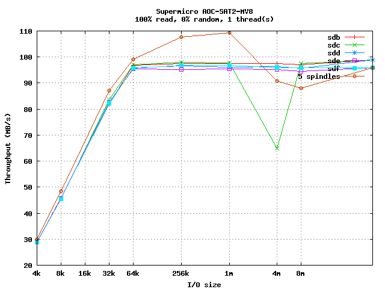
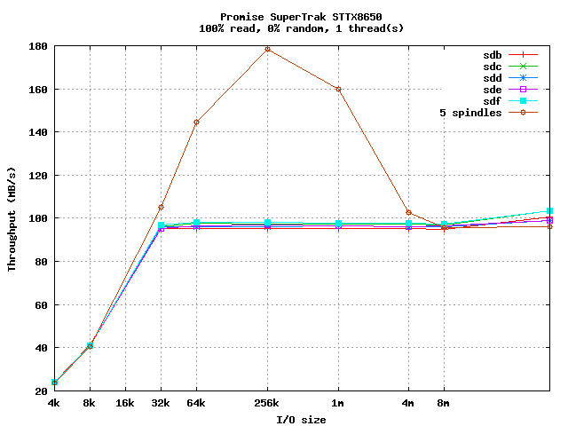
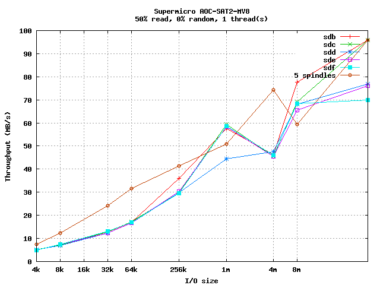
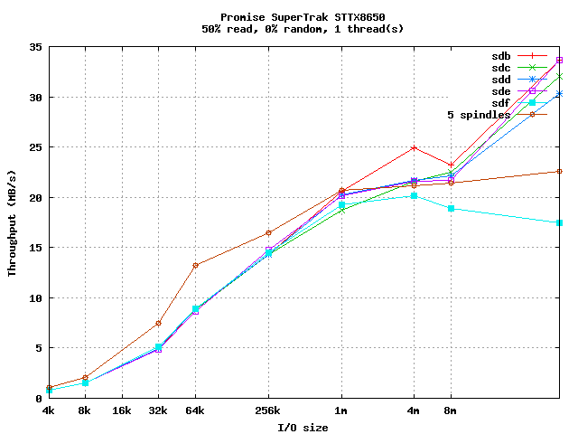
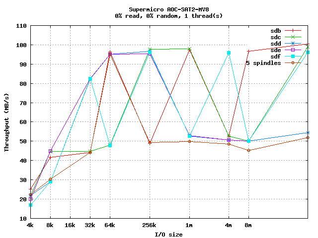
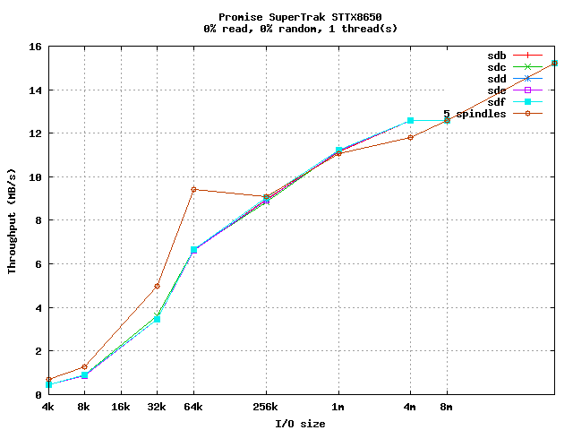
Random Single Threaded Tests
For random I/O, the throughput is dominated by drive seek time (with
the 64MB I/O rate approaching the pure sequential I/O rate). Again,
the Supermicro card does much better with write workloads.
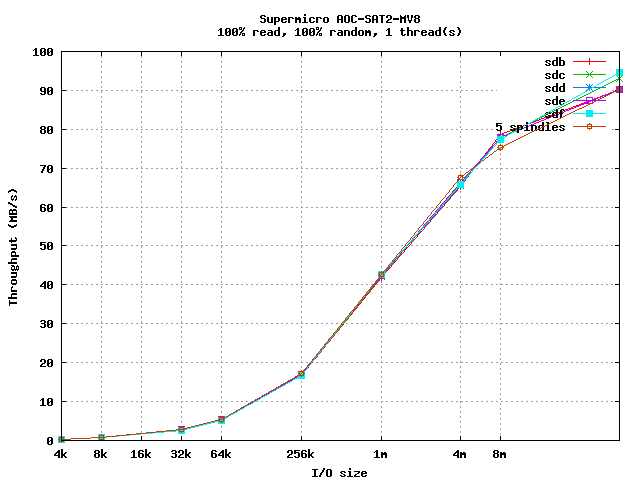
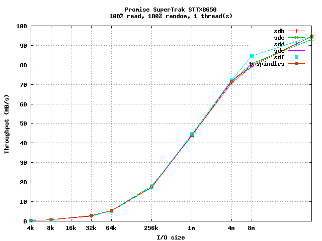
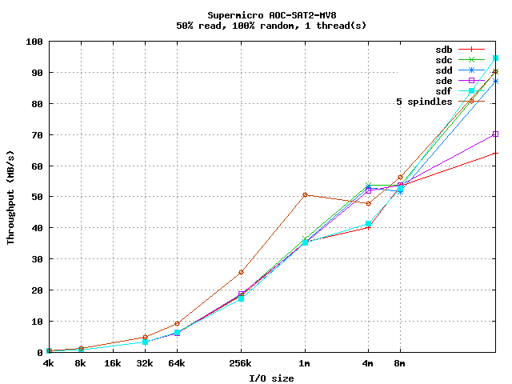
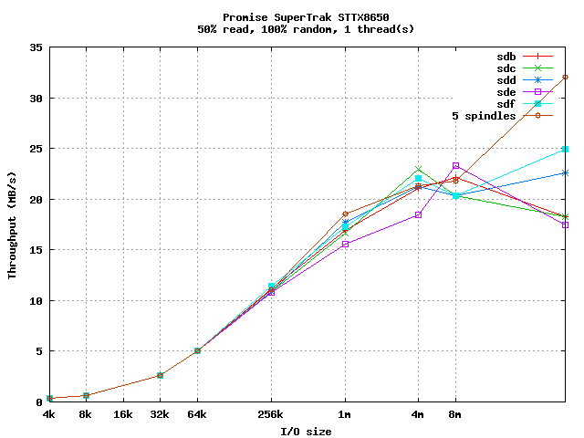
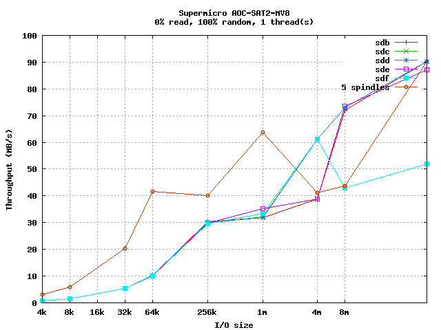
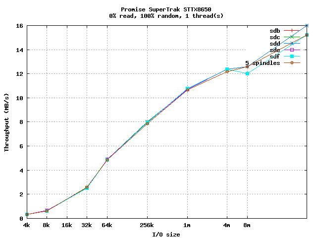
Sequential Multi-Threaded Tests
The Promise card clearly excels at multithreaded sequential reads,
sustaining near-100MB/s throughput even at large I/O sizes, and
scaling well when all 5 drives are in use. When writes are
introduced, the cards are fairly similar, with the Supermicro doing
much better for 100% write workloads.
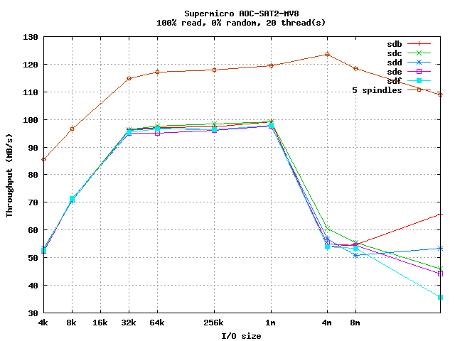
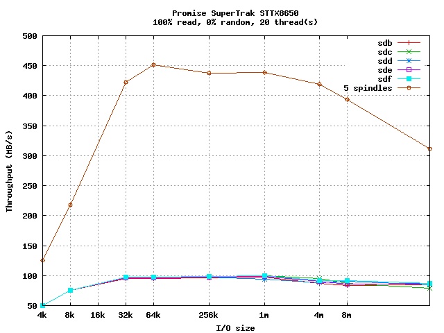
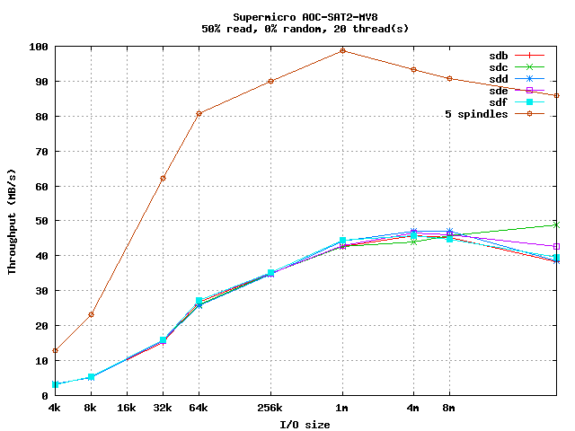
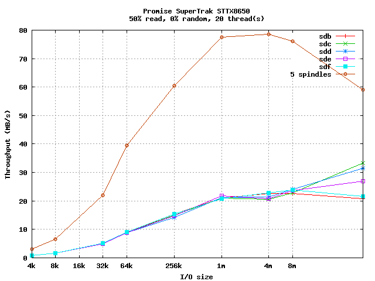
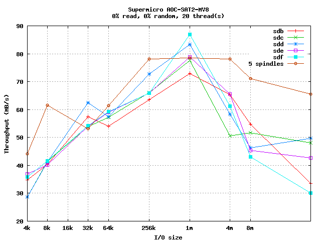
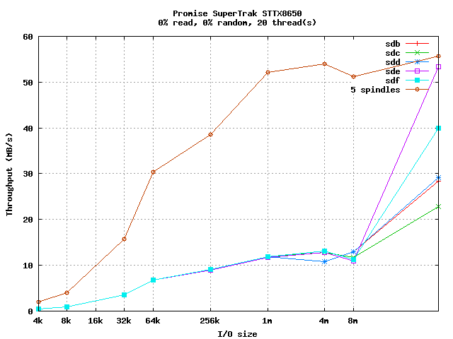
Random Multi-Threaded Tests
The Promise card again excels at pure read performance and
scalabilty, but when writes are introduced, the Supermicro leads.
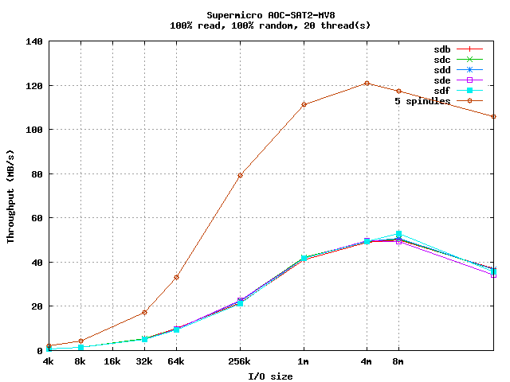
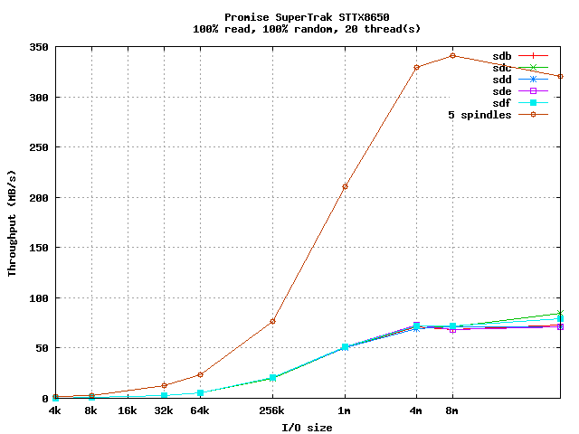
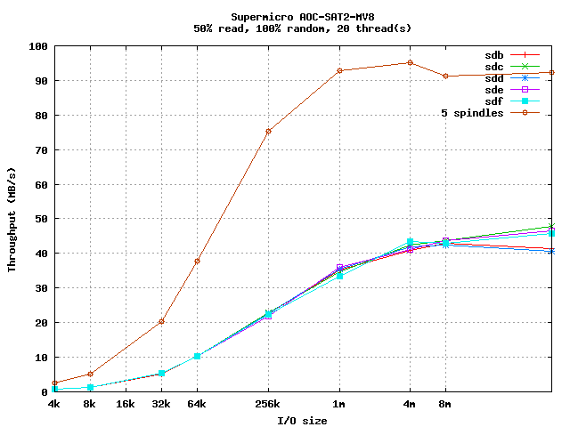
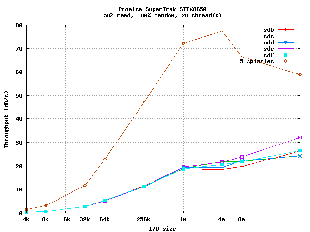
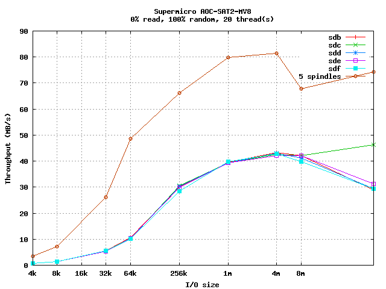
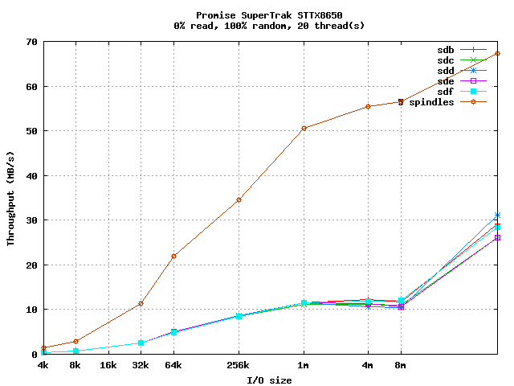